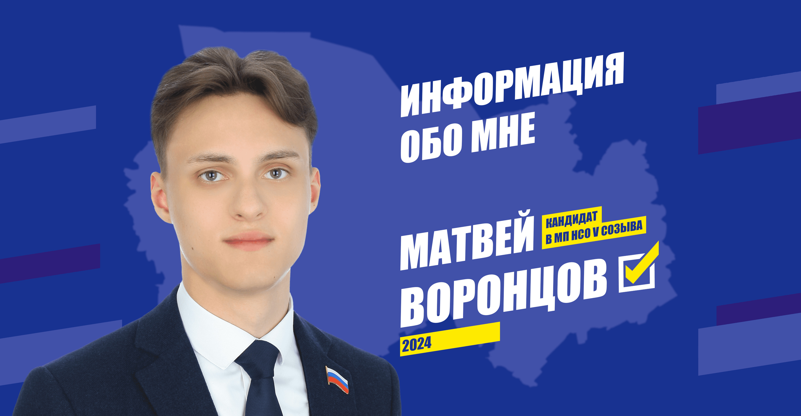
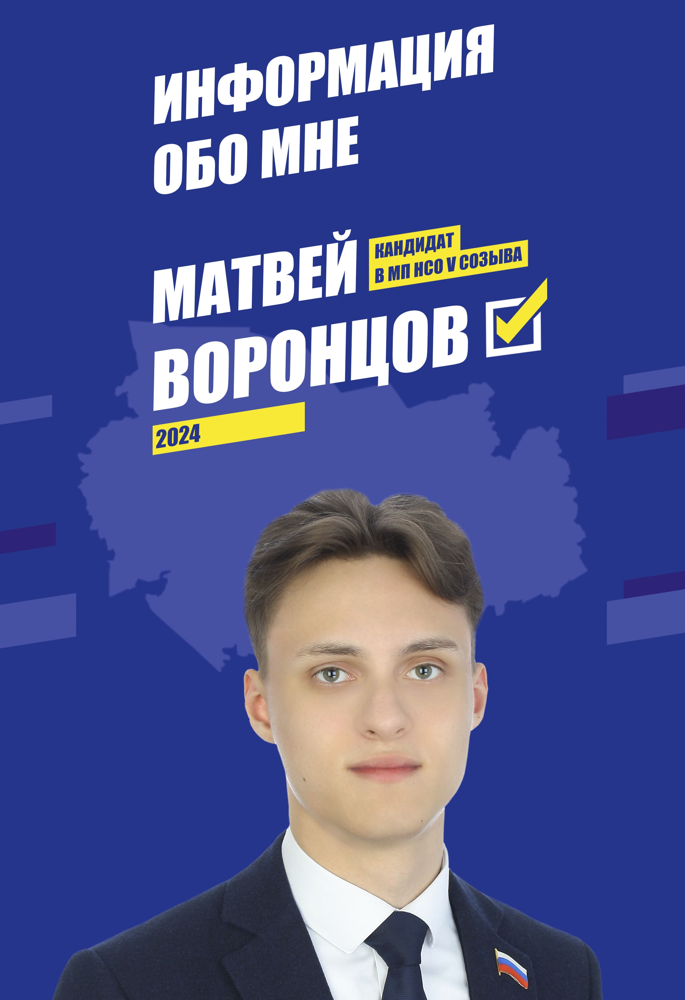
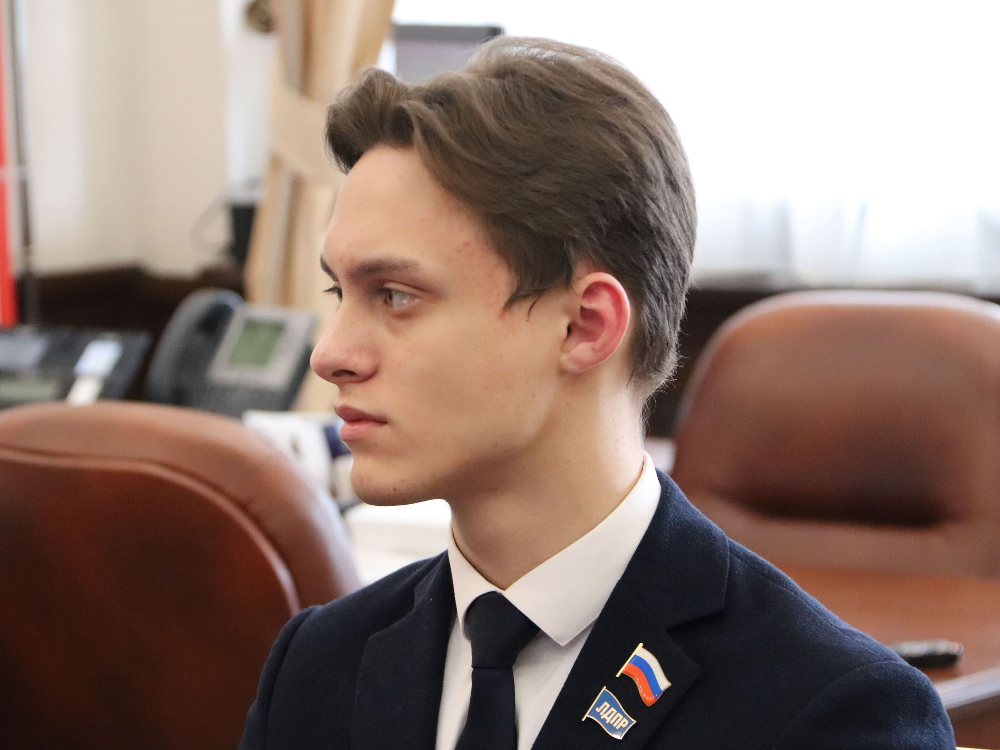
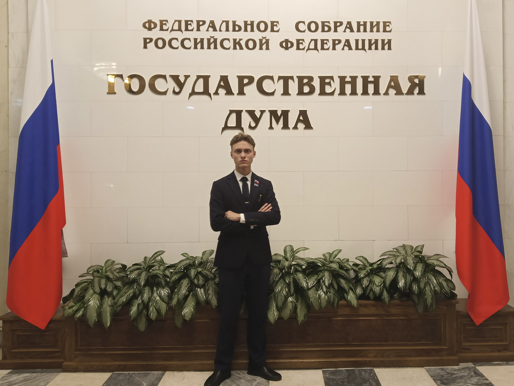
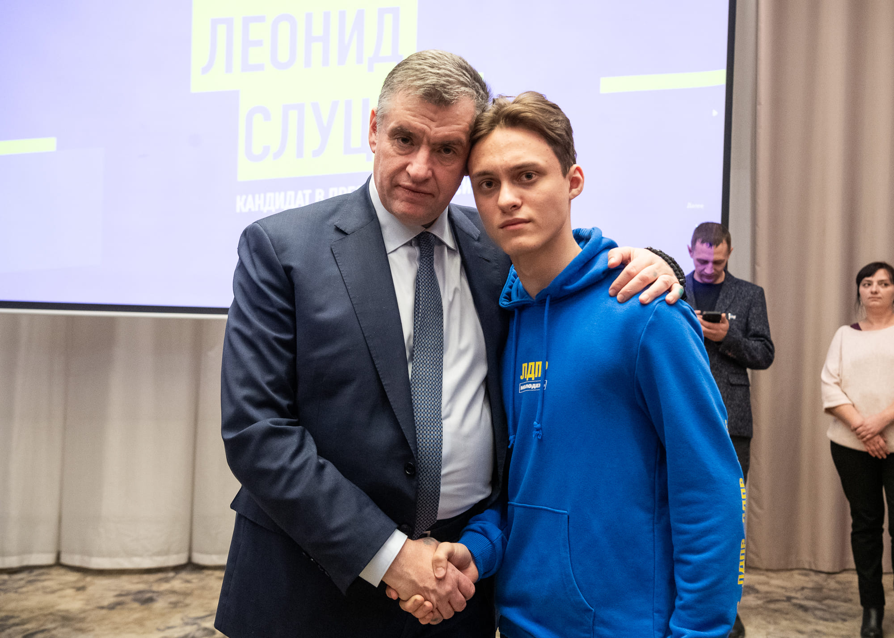
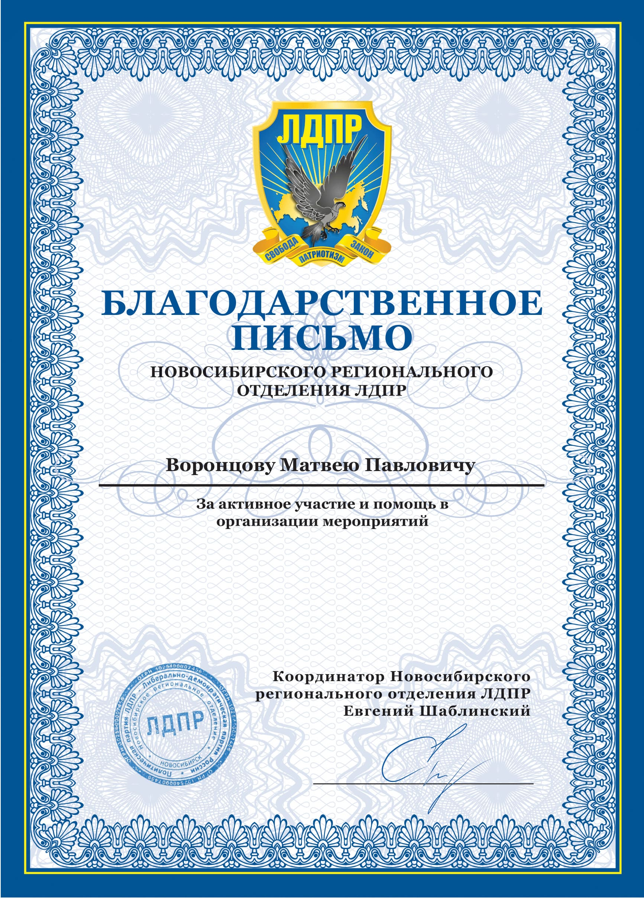
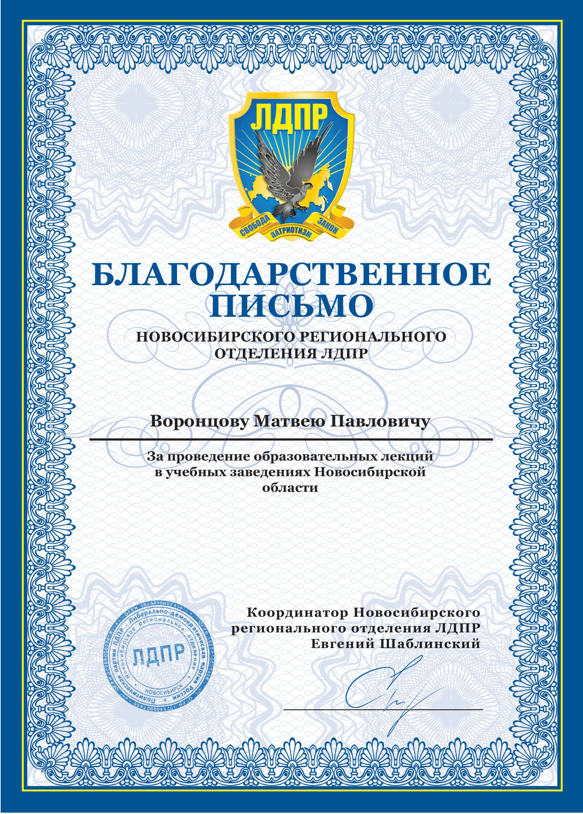
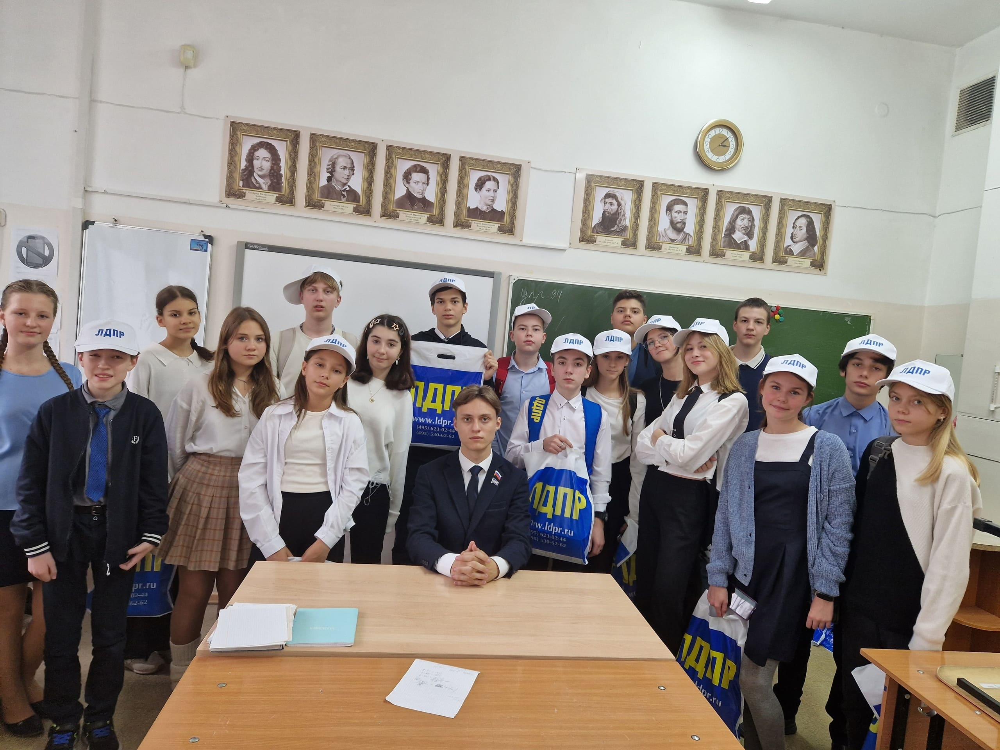
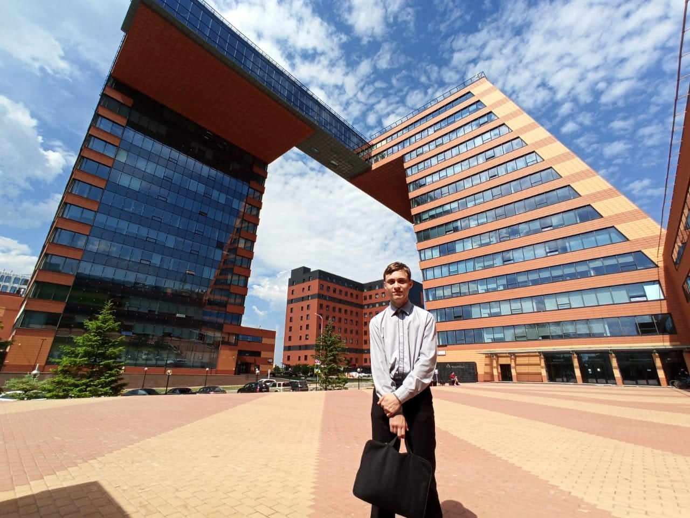

ВЫБОРЫ ПРЕЗИДЕНТА РОССИИ
15 - 17 МАРТА 2024 ГОДА
Для меня период выборов является уникальным опытом! К тому же за всю историю Избиркома Новосибирской области я стал самым молодым членом комиссии на областном уровне!
За дни голосования я посетил несколько избирательных участков, наблюдал за деятельностью рабочей группы информационного отдела Избирательной комиссии Новосибирской области по ГАС «Выборы», принимал участие в подсчёте бюллетеней на УИК по месту своей прописки.

ШКОЛА МОЛОДОГО ВОЕНКОРА
ИМЕНИ БОРИСА МАКСУДОВА
Проект ЛДПР «Школа молодого военкора имени Бориса Максудова» зародился ещё летом 2023 года на встрече лидера ЛДПР с ведущими военкорами страны.
Была принята инициатива о реализации образовательного проекта, в ходе которого военные репортёры на основе своего опыта готовят новое поколение военных журналистов.
Я являюсь финалистом I сезона проекта, а также одним из кураторов II сезона. Проект стал более чем результативным!

ЛИБЕРАЛЬНО-ДЕМОКРАТИЧЕСКАЯ ПАРТИЯ РОССИИ
Выбрал для себя я именно ЛДПР по причине Умеренно-центристской идеологии по положению партии, а также за заслуги великого основателя Владимира Вольфовича Жириновского и главный лозунг ЛДПР: «Не врать и не бояться!».
Целью своей жизни я вижу приведение своей родины к процветанию и небывалому ранее могуществу, торжество дела мира, а также достижение всенародной справедливости и правосудия.
Считаю, что в достижении данных целей мне по пути только с ЛДПР!



ПРОВЕДЕНИЕ ОБРАЗОВАТЕЛЬНЫХ ЛЕКЦИЙ
В рамках своей общественной деятельности я практикую проведение образовательных лекций на базе учебных заведений Новосибирской области на темы волонтёрства, общественной деятельности, истории и патриотизма.
Свои лекции я предпочитаю вести в интерактивном формате для большего вовлечения учащихся в повестку темы, таким образом дети активно участвуют в лекции, задавая вопросы и отвечая на них, а также будучи заинтересоваными в получении утешительных сувенирных наборов по окончанию интерактивного урока.

ДОСТИЖЕНИЯ В ОБРАЗОВАТЕЛЬНОЙ СФЕРЕ И ОБЩЕСТВЕННОЙ ДЕЯТЕЛЬНОСТИ
«Учиться, учиться и ещё раз учиться!» - данное высказывание должно стать одним из основопологающих лозунгов для каждого молодого человека, находящегося в школьном или студенческом возрасте!
Будучи представителем молодого поколения, я не теряю времени и делаю весомые успехи в образовании и, как отмечал ранее, в общественной деятельности. Например, я закончил очные курсы по программированию от крупнейшей в России IT-компании «Яндекс» или же, например, я зачастую становлюсь призёром научно-практических конференций и мои заслуги в молодёжной политике Новосибирской области также официально отмечаются.